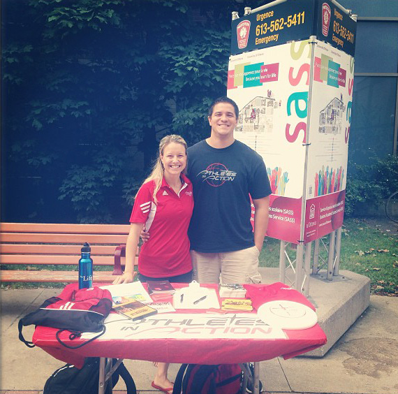

Who We Are
Athletes in Action is a Christian organization with just over 60 staff in Canada and a world wide team of well over 600 working and involved in 60 countries all over the world!
The Medium
Sport is the one language that knows no boundaries and sees no distinctions. It unites cultures, transcends values and defies convention. When words fail, a game can speak.
The Message
Athletes In Action is committed to using the language of sport to communicate the most powerful message of all: God’s passionate love for his children as communicated through his Son, Jesus Christ. It’s a story that’s changed our lives, given us purpose and hope, and we love telling this good news to others.
Our Vision
Jesus’ desire is to impact athletes lives. Our vision is to help athletes discover Jesus, know Him & experience real relationship with Him.
- 